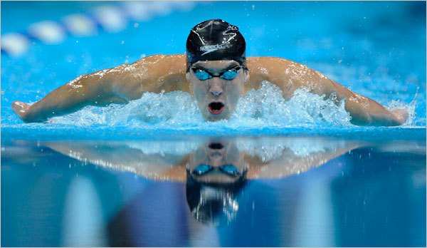

Sports
Hello, like I said in the Home Page, I'm a pretty athletic person. I don't do many sports
, but for the sports that I do, I'm decent.
The first sport that I do is Swimming and I've been swimming for IDK how long, but it's been a long time since I started.
Currently, I'm not in a swim team, but I started swimming at Schaumburg Barracudas, then I went to PPD, and then I started swimming for HEHS's boy's varsity team.
I don't have a main stroke because my best event is an IM.

The second sport is Track. I started running in 7th grade and I stopped running in 9th grade.
While I was still in track, I did the hurdles and the 100m run,but I didn't even know how to jump a hurdle and I wasn't fast at running.
The last sport is water polo. I started it freshman year and I don't know what to say about it.
It's a really hard sport. I don't think this sport is fit for me because it is an aggressive sport and I'm a nice person.